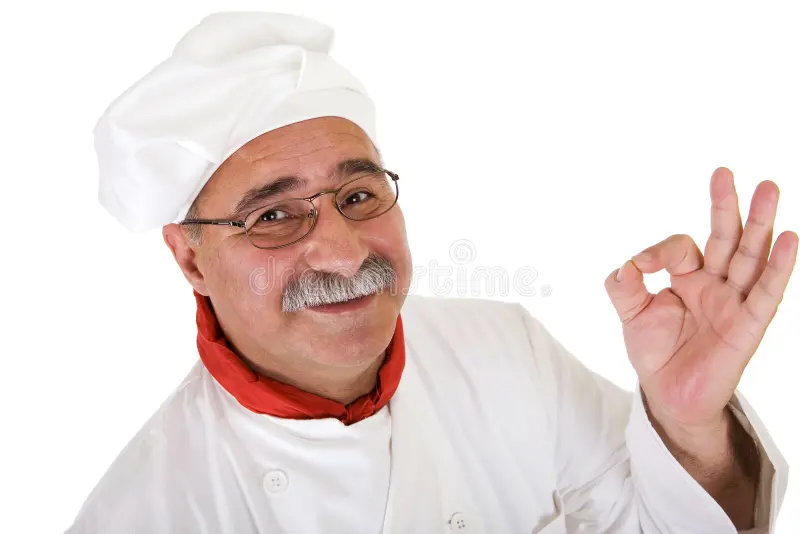

Sapore de mare foi criado com o intuito de reunir as delícias submersas com a classe da comida italiana. Como um restaurante Surf and Turf reunir a gastronomia italiana com a gastronomia clássica do beira-mar é a atração principal do nosso cardápio. Se junte a nós em nosso navio e façamos uma viagem a Itália submarina.
Nosso principal chef veio das ruas da Itália, vivendo uma vida pobre, buscava seu sustento como lenhador amador. Cortando e vendendo madeira conseguia sobreviver, mas com pouco, seu verdaeorp sonho era ser um chef de cozinha. Apesar de ter uma curta renda, Pablo Destructor Escobar conseguia seu alimento através da pescaria nas baias de Camogli,onde descubriu dotes culinários para unir a comida da floresta com peixes. Aos poucos, começou a vender suas preparações e a partir daí, teve uma renda maior. Começou a frequentar a faculdade de gastronomia local e sua vida virou de ponta cabeça. Depois de anos estudando, abriu seu primeiro restaurante Camarggio Araña e construiu seu nome no seu país. Depois de anos, em 2013, abriu seu restaurante de maior sucesso que vive até hoje. Sapore di mare possui mais de 3 unidades espalhadas por cidades litorâneas da itália.
